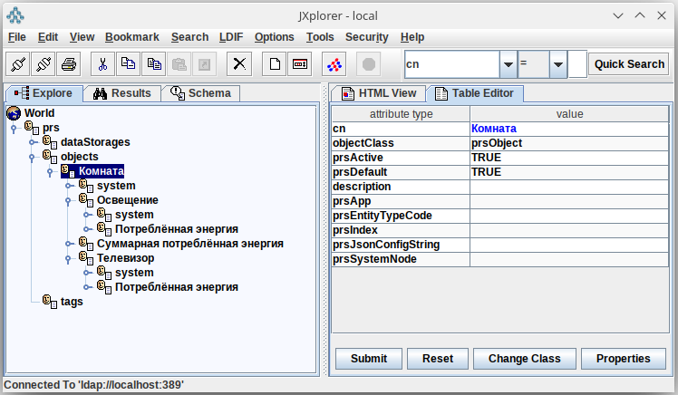

Методы
Метод — программа, которую платформа вызывает, чтобы модель что-то сделала: посчитала значение тега, ответила на чтение тега, приняла запись, вызвала внешнюю систему. Методы и составляют динамическую модель объекта.
Как устроен вызов
Код метода выполняется не внутри платформы, а в отдельном процессе —
исполнителе (worker). Исполнитель подключается к RabbitMQ платформы
и регистрирует свои функции под строковыми адресами, например sum
или prs.stdlib.add. Для вызова используется библиотека
patio с транспортом
patio-rabbitmq.
В модели метод — это узел под тегом или тревогой. В узле записаны:
адрес (
prsMethodAddress) — под каким именем функция зарегистрирована в исполнителе;тип (
prsEntityTypeCode) — когда вызывается метод, см. Типы методов;инициаторы — теги и расписания, события которых запускают вычислительный метод;
параметры — откуда взять значение каждого аргумента функции, см. Параметры.
Когда наступает событие, сервис методов вычисляет значения параметров,
сортирует их по prsIndex и вызывает функцию по адресу, передавая
значения позиционными аргументами.
Если метод не может или не должен вернуть результат (ошибка в данных,
нового значения нет), функция возвращает словарь с ключом error.
Значение ключа может быть любым: платформа запишет его в журнал,
а значение тега не изменит.
Типы методов
Код |
Тип |
Когда вызывается и что делает |
|---|---|---|
|
Вычислительный |
Вызывается для каждого нового значения тега-инициатора и при каждом срабатывании расписания-инициатора. Результат записывается в тег, которому принадлежит метод, с меткой времени события. |
|
Чтение |
Вызывается при чтении тега ( |
|
Запись |
Вызывается при записи в тег ( |
|
Действие при чтении |
Вызывается при чтении тега так же, как тип |
|
Действие при записи |
Вызывается при записи в тег так же, как тип |
Чтение и запись тега с методами типов 1 и 2 устроены так. Платформа
рассылает одно сообщение о чтении (или записи) и ждёт один ответ.
Если тег привязан и к хранилищу, и к методу типа 1 (или 2),
ответят оба, и платформа возьмёт тот ответ, который придёт первым.
Поэтому тег с методом чтения или записи обычно к хранилищу не привязывают;
конфигуратор отмечает такое сочетание красным значком. У типов 3 и 4
этой проблемы нет: они не отвечают.
Пример вычислительного метода
В комнате два потребителя электроэнергии: освещение и телевизор. У каждого есть тег «Потреблённая энергия», значения приходят с приборов учёта. У комнаты есть тег «Суммарная потреблённая энергия», который должен пересчитываться каждый раз, когда приходит новое значение от любого из потребителей.

Иерархия объектов и тегов примера
Исполнитель
Напишем исполнитель на Python. Нужны пакеты patio и patio-rabbitmq:
1import asyncio
2from patio import Registry, AsyncExecutor
3from patio_rabbitmq import RabbitMQBroker
4
5rpc = Registry(project="methods_app", auto_naming=False)
6
7
8def last_value(response: dict):
9 """Значение из ответа GET /v1/data/ на один тег."""
10 return response["data"][0]["data"][0][1]
11
12
13@rpc("sum")
14async def sum_energy(a: dict, b: dict):
15 try:
16 val_a = last_value(a) or 0
17 val_b = last_value(b) or 0
18 except (KeyError, IndexError, TypeError) as ex:
19 return {"error": f"нет данных: {ex}"}
20 return val_a + val_b
21
22
23async def main():
24 async with AsyncExecutor(rpc, max_workers=16) as executor:
25 async with RabbitMQBroker(
26 executor,
27 # адрес RabbitMQ платформы
28 amqp_url="amqp://<пользователь>:<пароль>@<сервер>/",
29 ) as broker:
30 await broker.join()
31
32
33if __name__ == "__main__":
34 asyncio.run(main())
Обратите внимание:
Проект в
Registryдолжен называтьсяmethods_app— так называется сервис методов платформы.Функция зарегистрирована под адресом
sum(строка 13). Этот адрес указывают в узле метода.Каждый аргумент получает ответ платформы на запрос исторических данных по одному тегу:
{"data": [{"tagId": "...", "data": [[x, y, q]]}]}. Функцияlast_valueдостаёт из него значениеy.
Исполнитель запускают как обычную программу на любой машине, откуда
доступен RabbitMQ платформы (порт 5672). Исполнителей может быть
несколько: каждый регистрирует свои адреса.
Узел метода
Теперь создадим узел метода под тегом «Суммарная потреблённая энергия». Для краткости пусть идентификаторы тегов такие:
1— «Суммарная потреблённая энергия» комнаты;2— «Потреблённая энергия» освещения;3— «Потреблённая энергия» телевизора.
Запрос POST /v1/methods/:
{
"parentId": "1",
"attributes": {
"cn": "Сумма",
"prsMethodAddress": "sum",
"prsEntityTypeCode": 0
},
"initiatedBy": ["2", "3"],
"parameters": [
{"attributes": {"prsIndex": 1, "prsJsonConfigString": {"request": {"tagId": ["2"]}}}},
{"attributes": {"prsIndex": 2, "prsJsonConfigString": {"request": {"tagId": ["3"]}}}}
]
}
Здесь:
parentId— тег, в который пишется результат;prsMethodAddress— адрес функции в исполнителе;initiatedBy— теги, новые значения которых запускают расчёт;parameters— аргументы функции по порядкуprsIndex. Каждый параметр здесь читает один тег: идентификатор лежит вrequest.tagId.
В этот запрос платформа сама подставляет finish, равный метке
времени нового значения инициатора. Поэтому метод получает значения
обоих тегов на один и тот же момент, а результат записывается в тег 1
с той же меткой.
То же самое можно сделать в конфигураторе: команда «Новый метод» в меню тега, затем адрес, инициаторы и параметры в свойствах.
Параметры
Как вычислить значение параметра, задаёт JSON в атрибуте
prsJsonConfigString параметра. Возможны такие варианты.
Данные тега. Параметр читает теги одним запросом
исторических данных. В конфигураторе правят
тело этого запроса: идентификаторы тегов и любые дополнительные ключи,
например имя операции интеграционного тега. В иерархию тело записывается
объектом request. Рядом, отдельно от тела, может стоять
responseJsonata — выражение, которое применяется уже к ответу.
Идентификатор тега на одном уровне с responseJsonata запросом не
является.
Ключ tagId внутри request — один идентификатор или список.
Платформа выполняет один data_get сразу по всем указанным тегам и
подставляет finish: при запуске от тега или расписания это метка
события, при чтении тега — finish из запроса клиента.
{
"request": {"tagId": ["<id тега>"], "op": "op"},
"responseJsonata": "$.data[0].data[0][1]"
}
Запрос клиента. Объект запроса, которым клиент читает тег. Нужен
методам чтения: так метод узнаёт, за какой период и с какими ключами
спрашивают тег. Ключ clientJsonata выбирает из запроса нужную часть;
без него в параметр попадает весь запрос:
{"clientJsonata": "$.finish"}
Если метод запущен событием, а не чтением, вместо запроса клиента
используется объект {"finish": ..., "start": null, "point": {"x": ..., "y": ..., "q": ...}}
с новым значением инициатора.
Запрос к платформе. Произвольное внутреннее сообщение сервису
платформы: ключ маршрутизации routingKey, тело message и
необязательное responseJsonata. Например, так метод получает
атрибуты узла иерархии:
{
"routingKey": "prsTag.api_crud.read.*",
"message": {"id": ["<id тега>"], "attributes": ["prsJsonConfigString"]},
"responseJsonata": "data[0].attributes"
}
Внешний HTTP-запрос. Объект httpRequest с полями method
(GET, POST, PUT, PATCH, DELETE, HEAD), url
(только http:// и https://), необязательными headers и body.
В параметр попадает тело ответа; ответ в JSON разбирается в объект.
Ответ больше 1 МБ, ответ с кодом не из диапазона 2xx и ожидание
дольше 20 секунд считаются ошибкой. Перенаправления не выполняются.
{
"httpRequest": {"method": "GET", "url": "https://example.com/api/rate"},
"responseJsonata": "rate"
}
Привязка. Короткая форма, которую обычно используют у ссылок на методы каталога (см. ниже):
{"binding": "tag", "tagId": "<id>"}— значение одного тега. Это короткая привязка ссылки на метод каталога, не запросrequest;{"binding": "literal", "value": 1, "valueTypeCode": 2}— постоянное значение;valueTypeCode:1целое,2вещественное,3строка,4JSON;{"binding": "constant", "constantId": "<id>"}— значение константы модели.
Каталог методов
Один и тот же метод часто нужен многим тегам: сложение, среднее, перевод
единиц. Чтобы не повторять адрес и список параметров в каждом теге,
определение метода кладут в каталог — папку «Методы» в конфигураторе
(узел cn=methods,cn=prs), а у тегов и тревог создают ссылки на него.
Определение в каталоге
Определение задаёт адрес и список параметров: имя, описание и порядок
(prsIndex). Имя нужно только человеку: при вызове учитывается
порядок параметров. Тип значения платформа не задаёт и не проверяет.
Инициаторов и источников значений у определения нет, тип определения
всегда 0.
Запрос POST /v1/methods/:
{
"parentId": "<id папки каталога или пусто для корня>",
"attributes": {
"cn": "add",
"prsMethodAddress": "prs.stdlib.add",
"prsEntityTypeCode": 0
},
"parameters": [
{"attributes": {"cn": "a", "prsIndex": 1, "prsValueTypeCode": 2}},
{"attributes": {"cn": "b", "prsIndex": 2, "prsValueTypeCode": 2}}
]
}
Если у определения задан атрибут prsVariadic: true («Произвольные
параметры» в конфигураторе), список параметров в каталоге не хранится.
Тогда каждая ссылка сама задаёт, сколько у неё параметров и какие,
а платформа не проверяет их число. При чтении определения поле
parameterCount показывает число параметров.
Определения раскладывают по папкам. Папка каталога создаётся тем же
запросом с флагом folder (см. Папки):
{"folder": true, "attributes": {"cn": "Арифметика"}}
Удаление папки удаляет вложенные папки и определения.
Ссылка на определение
Ссылка — узел метода под тегом или тревогой с полем catalogMethodId.
У ссылки свои тип (0–4), инициаторы и источники значений
параметров, а адрес берётся из каталога:
{
"parentId": "<id тега>",
"catalogMethodId": "<id определения в каталоге>",
"attributes": {"cn": "Сумма комнаты", "prsEntityTypeCode": 0},
"initiatedBy": ["<id тега-инициатора>"],
"parameters": [
{"attributes": {"prsIndex": 1, "prsJsonConfigString": {"binding": "tag", "tagId": "<id>"}}},
{"attributes": {"prsIndex": 2, "prsJsonConfigString": {"binding": "literal", "value": 1, "valueTypeCode": 2}}}
]
}
Правила:
Адрес вызова каждый раз читается из каталога: если адрес в определении изменили, ссылки сразу вызывают новый.
Источник значения параметра у ссылки задаётся любым из вариантов раздела Параметры.
Перед вызовом платформа проверяет, что число параметров совпадает с определением. Тип значения не проверяется. При
prsVariadicне проверяется и число.Определение, на которое есть ссылки, удалить нельзя (ответ
409). То же относится к папке, в которой оно лежит.Ссылку можно копировать, определение — копировать внутри каталога. Скопировать определение под тег или тревогу нельзя (ответ
422): для этого создают ссылку.
Загрузка описания
Набор папок и методов можно загрузить в каталог одним файлом YAML.
В конфигураторе это команда «Загрузка описания» в меню папки «Методы»
или вложенной папки, через API — POST /v1/methods/description
с полями yaml (текст описания), parentId (папка) и probe.
folders:
- cn: stdlib
description: Стандартные арифметические методы
methods:
- cn: add
address: prs.stdlib.add
description: Сложение
parameters:
- {cn: a, type: float}
- {cn: b, type: float}
probe: [2, 3]
methods:
- cn: echo
address: prs.example.echo
parameters:
- {cn: text, type: string}
У метода обязателен адрес (address или prsMethodAddress).
Параметр описывают поля cn, index и type (int, float,
string, json или код 1–4). Метод с адресом, который уже есть
в каталоге, повторно не создаётся. В ответе перечислено, какие папки
и методы созданы. При probe: true платформа после загрузки пробно
вызывает каждый метод с аргументами из probe и сообщает результат.
Полный пример — docs/source/samples/methods/methodDescription.yaml.
Пакеты методов
Пакет методов — это исполнитель вместе с YAML-описанием его адресов. Платформа не загружает пакеты сама: описание отправляют в каталог через API или конфигуратор, а исполнитель запускают отдельно.
В репозитории лежит пример пакета — methods/packages/stdlib: сложение,
вычитание, умножение и деление по адресам prs.stdlib.add,
prs.stdlib.sub, prs.stdlib.mul, prs.stdlib.div. В поставку он
не входит. Запуск исполнителя:
python methods/packages/stdlib/worker.py
Адрес RabbitMQ исполнитель берёт из переменной окружения amqp_url.
Аргументы он принимает и числами, и ответами GET /v1/data/.
Если аргумент отсутствует, не число или делитель равен нулю,
он возвращает {"error": "..."}, и значение тега не записывается.
Примеры тел запросов лежат в docs/source/samples/methods/:
addMethodFolderIn.txt, addCatalogMethodIn.txt,
addCatalogInstanceIn.txt.